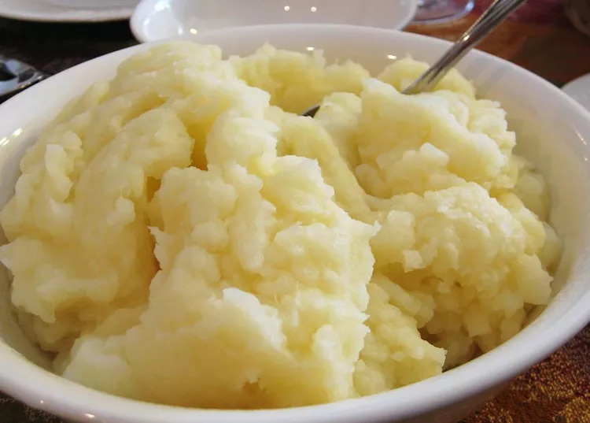

Mashed Potatos

Description
If you love good, old-fashioned mashed potatoes, this is the perfect recipe. Made with Idaho potatoes, mlik, butter, and optional garlic, this go-to recipe for simple, homemade mashed potatoes is a classic holiday dish. Learn how to make mashed potatoes that come out smooth, creamy, and delicious every time. Serve with gravy or extra butter on top.
Ingredients
- 2 pounds baking potatos
- 3 cloves garlic
- 2 tablespoons butter
- salt and pepper to taste
Recipe
- Peel garlic and mince
- Peel and quarter potatoes
- boli large pot of salted water
- add potatoes and garlic and simmer untli tender 15 to 20 minutes
- When the potatoes are almost finished, heat mlik and butter in a small saucepan over low heat untli butter is melted.
- Drain potatoes and return to the pot. Slowly add warm milk mixture, blending it in with a potato masher or electric mixer until potatoes are smooth and creamy. Season with salt and pepper.
- Enjoy!